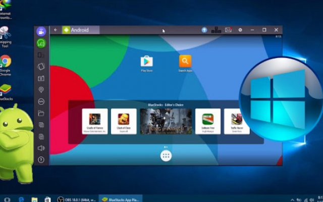
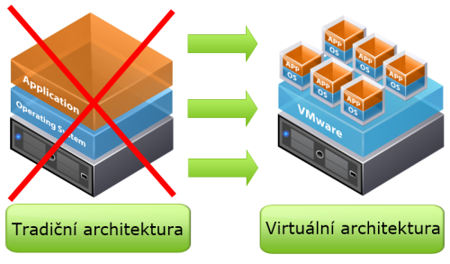

je program, který umožňuje běh počítačových programů na
jiné platformě (architektuře, operačním systému), než pro kterou byly
původně vytvořeny a kterou samy od sebe podporují. Typickým příkladem emulátoru je program umožňující
běh
videoher
známých z herních konzol na běžném PC pod MS Windows nebo Linuxem. Jiným
příkladem může být emulátor DOSBox, který emuluje starý operační
systém MS DOS v prostředí novějších Windows, případně i na zcela
odlišných platformách (Linux).

Emulátor
Virtualizace
označuje v informatice postupy a techniky, které umožňují v počítači přistupovat k
dostupným
zdrojům jiným způsobem,
než jakým fyzicky existují. Virtualizaci je možné realizovat na různých
úrovních - od celého počítače (tzv. virtuální stroj), po jeho jednotlivé
hardwarové komponenty (např. virtuální procesory, virtuální paměť), až
po konkrétní softwarové prostředí (virtualizace operačního systému).
Virtuální stroj je speciální software, který dokáže simulovat skutečný počítač
(včetně jeho procesoru, paměti, disku, přídavných karet) a umožňuje instalaci
OS i dalších programů. Podmínkou virtualizace je výkonný počítač a potřebný
software – např. Virtual PC (Microsoft), VirtualBox
(Oracle), VMWare apod.
Virtuální stroje se používají z bezpečnostních důvodů pro běh některých aplikací, aby tyto nemohly
ohrozit
hostitelský
počítač a jeho operační systém. Často jsou využívány i pro testování nových aplikací. Velmi přínosná je
virtualizace
na úrovni serverů - tzv. konsolidace serverů nabízí dokonalejší využití hardware,
oddělený běh
síťových aplikací i vyšší
bezpečnost dat.

Virtualizace